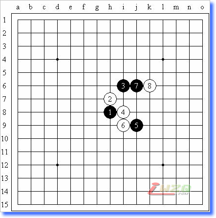
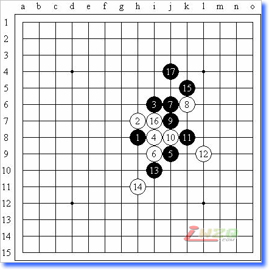
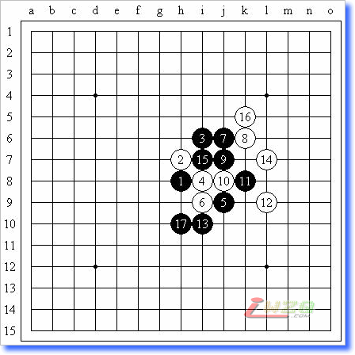
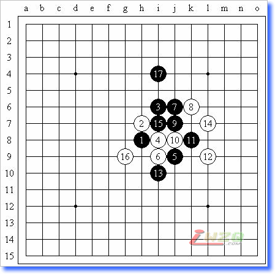

李洪斌《一个看似简单的问题》的思考
#1 李洪斌《一个看似简单的问题》的思考 作者：有志青年 发表时间：2008-6-13 7:42:31
原文地址：http://hi.baidu.com/%C6%C1%B1%CE/blog/item/3536adb797f8a4f130add170.html
最近又翻看李洪斌老师的空间，对以前一些问题又有了新的看法。记得当时看到这篇帖子《一个看似简单的问题》（http://hi.baidu.com/lihongbin/blog/item/e3b1b77781e31f1bb151b94b.html）时，为了寻找VCT花费了许多时间，但终于还是无果而终，其实当时考虑的VCT无非就是冲四、活三，大不了加个一步的做杀，现在看来着实可笑。重新分析这个局面，很多当时怎么都想不到的好点已经变得很普通了。如下图：黑先如何胜？

黑9~白12必然，以下是三个主要的分支，行至如图之局面，取胜不难。



如何分析呢？如果大局观足够强，就应该注意到如果k5被白棋防守，那么上方单独不能成杀（与云月一变化稍有不同），此时h11就万万不能有白子，才能联络上下。在这个想法的指导下注意手顺即可。#2 Re:李洪斌《一个看似简单的问题》的思考 作者：五子天下 发表时间：2008-6-13 9:41:14
感觉很好~，很有启发~#3 Re:李洪斌《一个看似简单的问题》的思考 作者：菜巫妖 发表时间：2008-7-5 13:31:06
先自己研究一下再说